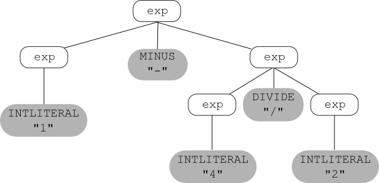
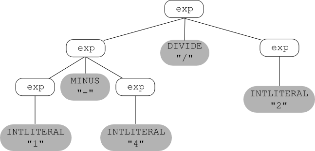
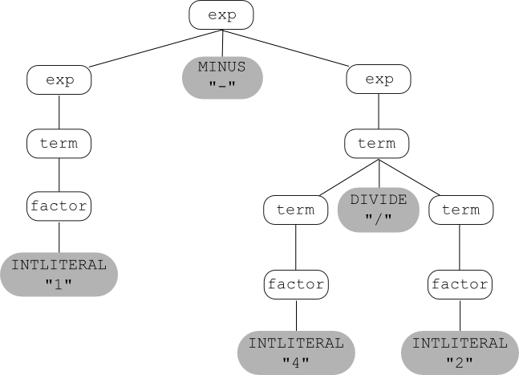
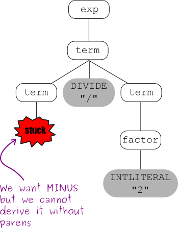
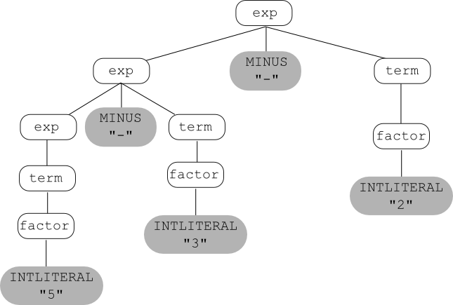

Contents
Overview
Recall that
the input to the parser is a sequence of tokens (received interactively,
via calls to the scanner).
The parser:
- Groups the tokens into "grammatical phrases".
- Discovers the underlying structure of the program.
- Finds syntax errors.
- Perhaps also performs some actions to find other kinds of errors.
The output depends on whether the input is a syntactically legal program;
if so, then the output is some representation of the program:
- an abstract-syntax tree (maybe + a symbol table),
- or intermediate code,
- or object code.
We know that we can use regular expressions to define languages
(for example, the languages of the tokens to be recognized by the scanner).
Can we use them to define the language to be recognized by the parser?
Unfortunately, the answer is no.
Regular expressions are not powerful enough to define many aspects
of a programming language's syntax.
For example, a regular expression cannot be used to specify that the
parentheses in an expression must be balanced, or that every
``else'' statement has a corresponding ``if''.
Furthermore, a regular expression doesn't say anything about
underlying structure.
For example, the following regular expression defines integer arithmetic
involving addition, subtraction, multiplication, and division:
digit+ (("+" | "-" | "*" | "/") digit+)*
but provides no information about the precedence and associativity of
the operators.
So to specify the syntax of a programming language, we use a different
formalism, called context-free grammars.
Simple Arithmetic Expressions
We can write a context-free grammar (CFG) for the language of (very simple)
arithmetic expressions involving only subtraction and division.
In English:
- An integer is an arithmetic expression.
- If exp1 and exp2 are arithmetic expressions,
then so are the following:
- exp1 - exp2
- exp1 / exp2
- ( exp1 )
Here is the corresponding CFG:
exp → INTLITERAL
exp → exp MINUS exp
exp → exp DIVIDE exp
exp → LPAREN exp RPAREN
And here is how to understand the grammar:
- The grammar has five terminal symbols:
INTLITERAL MINUS DIVIDE LPAREN RPAREN.
The terminals of a grammar used to define a programming language
are the tokens returned by the scanner.
- The grammar has one nonterminal: exp
(note that a single name, exp, is used instead of
exp1 and exp2 as in the
English definition above).
- The grammar has four productions or rules,
each of the form: exp → ...
A production left-hand side is a single nonterminal.
A production right-hand side is either the special symbol ε
(the same ε that can be used in a regular expression) or a
sequence of one
or more terminals and/or nonterminals (there is no rule with
ε on the right-hand side in the example given above).
A more compact way to write this grammar is:
exp → INTLITERAL | exp MINUS exp | exp DIVIDE exp | LPAREN exp RPAREN
Intuitively, the vertical bar means ``or'', but do not be fooled
into thinking that the right-hand sides of grammar rules can contain
regular expression operators!
This use of the vertical bar is just shorthand for writing multiple
rules with the same left-hand-side nonterminal.
Formal Definition
A CFG is a 4-tuple (N,Σ,P,S) where:
- N is a set of nonterminals.
- Σ is a set of terminals.
- P is a set of productions (or rules).
- S is the start nonterminal (sometimes called the goal nonterminal) in
N. If not specified, then it is the nonterminal that
appears on the left-hand side of the first production.
Example: Boolean Expressions, Assignment Statements, and If Statements
The language of boolean expressions can be defined in English as follows:
- "true" is a boolean expression, recognized by the token TRUE.
- "false" is a boolean expression, recognized by the token FALSE.
- If exp1 and exp2 are boolean expressions, then so are the following:
- exp1 || exp2
- exp1 && exp2
- ! exp1
- ( exp1 )
Here is the corresponding CFG:
bexp → TRUE
bexp → FALSE
bexp → bexp OR bexp
bexp → bexp AND bexp
bexp → NOT bexp
bexp → LPAREN bexp RPAREN
Here is a CFG for a language of very simple assignment statements
(only statements that assign a boolean value to an identifier):
stmt → ID ASSIGN bexp SEMICOLON
We can ``combine'' the two grammars given above, and add two more rules
to get a grammar that defines the language of (very simple) if statements.
In words, an if statement is:
- The word "if", followed by a boolean expression in parentheses,
followed by a statement, or
- The word "if", followed by a boolean expression in parentheses,
followed by a statement, followed by the word "else", followed
by a statement.
And here's the grammar:
stmt → IF LPAREN bexp RPAREN stmt
stmt → IF LPAREN bexp RPAREN stmt ELSE stmt
stmt → ID ASSIGN bexp SEMICOLON
bexp → TRUE
bexp → FALSE
bexp → bexp OR bexp
bexp → bexp AND bexp
bexp → NOT bexp
bexp → LPAREN bexp RPAREN
TEST YOURSELF #1
Write a context-free grammar for the language of very simple while loops
(in which the loop body only contains one statement) by adding a new production
with nonterminal stmt on the left-hand side.
solution
The Language Defined by a CFG
The language defined by a context-free grammar is the set of strings
(sequences of terminals) that can be derived from the start
nonterminal.
What does it mean to derive something?
- Start by setting the "current sequence" to be the start nonterminal.
- Repeat:
- find a nonterminal X in the current sequence;
- find a production in the grammar with X on the
left (i.e., of the form X → α,
where α is either ε (the empty string) or a
sequence of terminals and/or nonterminals);
- Create a new "current sequence" in which
α
replaces the X found above;
until the current sequence contains no nonterminals.
Thus we arrive either at epsilon or at a string of terminals.
That is how we derive a string in the language defined by a CFG.
Below is an example derivation, using the 4 productions for the grammar
of arithmetic expressions given above.
In this derivation, we use the actual lexemes instead of the token names
(e.g., we use the symbol "-" instead of MINUS).
exp ⟶ exp - exp ⟶ 1 - exp ⟶ 1 - exp / exp ⟶
1 - exp / 2 ⟶ 1 - 4 / 2
And here is some useful notation:
- ⟹ means derives in one step
- ⟹+ means derives in one or more steps
- ⟹∗ means derives in zero or more steps
So, given the above example, we could write:
exp ⟹+ 1 - exp / exp.
A more formal definition of what it means for
a CFG G to define a language may be stated as follows:
L(G)={w|S⟶+w}
where
- S is the start nonterminal of G
- w is a sequence of terminals or ε
Leftmost and Rightmost Derivations
There are several kinds of derivations that are important.
A derivation is a leftmost derivation if it is
always the leftmost nonterminal that is chosen to
be replaced.
It is a rightmost derivation if it is always the rightmost one.
Parse Trees
Another way to derive things using a context-free grammar is to
construct a parse tree (also called a derivation tree) as follows:
- Start with the start nonterminal.
- Repeat:
- choose a leaf nonterminal X
- choose a production X⟶α
- the symbols in α become the children of X in the tree
until there are no more leaf nonterminals left.
The derived string is formed by reading the leaf nodes from left to right.
Here is the example expression grammar given above:
exp → INTLITERAL
exp → exp MINUS exp
exp → exp DIVIDE exp
exp → LPAREN exp RPAREN
and, using that grammar, here's a parse tree for the
string 1 - 4 / 2:

TEST YOURSELF #2
Below is the CFG for very simple if statements used earlier.
stmt → IF LPAREN bexp RPAREN stmt
stmt → IF LPAREN bexp RPAREN stmt ELSE stmt
stmt → ID ASSIGN bexp SEMICOLON
bexp → TRUE
bexp → FALSE
bexp → bexp OR bexp
bexp → bexp AND bexp
bexp → NOT bexp
bexp → LPAREN bexp RPAREN
Question 1:
Give a derivation for the string:
if (! true ) x = false;
Is your derivation leftmost, rightmost, or neither?
Question 2:
Give a parse tree for the same string.
solution
Ambiguous Grammars
The string 1 - 4 / 2 has two parse trees using the
example expression grammar.
One was given above; here's the other one:

If for grammar G and string w there is:
- more than one leftmost derivation of w or,
- more than one rightmost derivation of w, or
- more than one parse tree for w
then G is called an ambiguous grammar.
(Note: the three conditions given above are equivalent;
if one is true then all three are true.)
In general, ambiguous grammars cause problems:
- Ambiguity can make parsing difficult.
- The underlying structure of the language defined by an
ambiguous grammar is ill-defined (in the above example, the relative
precedences of subtraction and division are not uniquely defined;
the first parse tree groups 4/2 while the second groups 1-4, and
those two groupings correspond to expressions with different
values).
Expression Grammars
Since every programming language includes expressions, it is useful to
know how to write a grammar for an expression language so that the grammar
correctly reflects the precedences and associativities of the operators.
Precedence
To write a grammar whose parse trees express precedence correctly,
use a different nonterminal for each precedence level.
Start by writing a rule for the operator(s) with the lowest precedence
("-" in our case), then write a rule for the operator(s) with the next
lowest precedence, etc:
exp → exp MINUS exp | term
term → term DIVIDE term | factor
factor → INTLITERAL | LPAREN exp RPAREN
Now let's try using these new rules to build parse trees for
1 - 4 / 2.
First, a parse tree that correctly reflects that fact that division
has higher precedence than subtraction:

Now we'll try to construct a parse tree that shows the wrong
precedence:

Associativity
This grammar captures operator precedence, but it is still ambiguous!
Parse trees using this grammar may not correctly express the fact that
both subtraction and division are left associative; e.g., the
expression:
5-3-2 is equivalent to: ((5-3)-2) and not to:
(5-(3-2)).
TEST YOURSELF #3
Draw two parse trees for the expression 5-3-2 using the
current expression grammar:
exp → exp MINUS exp | term
term → term DIVIDE term | factor
factor → INTLITERAL | LPAREN exp RPAREN
One of your parse trees should correctly group 5-3, and the
other should incorrectly group 3-2.
solution
To understand how to write expression grammars that correctly reflect
the associativity of the operators, you need to understand about
recursion in grammars.
- A grammar is recursive in nonterminal X if:
X⟶+…X…
(in one or more steps, X derives a sequence of symbols that includes
an X).
- A grammar is left recursive in X if:
X⟶+X...
(in one or more steps, X derives a sequence of symbols that
starts with an X).
- A grammar is right recursive in X if:
X⟶+…X
(in one or more steps, X derives a sequence of symbols that
ends with an X).
The grammar given above for arithmetic expressions is both left and
right recursive in nonterminals exp and term (can
you write the derivation steps that show this?).
To write a grammar that correctly expresses operator associativity:
- For left associativity, use left recursion.
- For right associativity, use right recursion.
Here's the correct grammar:
exp → exp MINUS term | term
term → term DIVIDE factor | factor
factor → INTLITERAL | LPAREN exp RPAREN
And here's the (one and only) parse tree that can be built
for 5 - 3 - 2 using this grammar:

Now let's consider a more complete expression grammar, for arithmetic
expressions with addition, multiplication, and exponentiation, as well
as subtraction and division.
We'll use the token POW for the exponentiation operator, and we'll use
"**" as the corresponding lexeme; e.g., "two to the third power" would
be written: 2 ** 3, and the corresponding sequence of tokens
would be: INTLITERAL POW INTLITERAL.
Here's an ambiguous context-free grammar for this language:
| exp | → |
exp PLUS exp | exp MINUS exp | exp TIMES exp | exp DIVIDE exp |
| | | exp POW exp | LPAREN exp RPAREN | INTLITERAL |
First, we'll modify the grammar so that parse trees correctly reflect
the fact that addition and subtraction have the same, lowest
precedence; multiplication and division have the same, middle
precedence; and exponentiation has the highest precedence:
| exp |
→ |
exp PLUS exp |
| exp MINUS exp |
| term
|
| term |
→ |
term TIMES term
| | term DIVIDE term
| | factor
|
| factor
| → |
factor POW factor
| | exponent
|
| exponent
| → |
INTLITERAL |
| LPAREN exp RPAREN |
This grammar is still ambiguous; it
does not yet reflect the associativities of the operators.
So next we'll modify the grammar so that parse trees correctly reflect the
fact that all of the operators except exponentiation are left associative (and
exponentiation is right associative; e.g., 2**3**4 is equivalent
to: 2**(3**4)):
| exp
| → exp PLUS term
| | exp MINUS term
| | term |
| term |
→ term TIMES factor
| | term DIVIDE factor
| | factor
|
| factor
| → exponent POW factor
| | exponent
|
| exponent
| → INTLITERAL
| | LPAREN exp RPAREN
|
Finally, we'll modify the grammar by adding a unary operator,
unary minus,
which has the highest precedence of all (e.g., -3**4 is
equivalent to: (-3)**4, not to -(3**4).
Note that the notion of associativity does not apply to unary operators,
since associativity only comes into play in an expression of the form:
x op y op z.
| exp
| → exp PLUS term
| | exp MINUS term
| | term
|
| term
| → term TIMES factor
| | term DIVIDE factor
| | factor
|
| factor
| → exponent POW factor
| | exponent
|
| exponent
| → MINUS exponent
| | final
|
| final
| → INTLITERAL
| | LPAREN exp RPAREN
|
TEST YOURSELF #4
Below is the grammar we used earlier for the language of boolean
expressions, with two possible operands: true false, and
three possible operators: and or not:
bexp → TRUE
bexp → FALSE
bexp → bexp OR bexp
bexp → bexp AND bexp
bexp → NOT bexp
bexp → LPAREN bexp RPAREN
Question 1:
Add nonterminals so that or has lowest precedence, then
and, then not.
Then change the grammar to reflect the fact that both
and and or are left associative.
Question 2:
Draw a parse tree (using your final grammar for Question 1)
for the expression: true and not true.
solution
List Grammars
Another kind of grammar that you will often need to write is a grammar
that defines a list of something.
There are several common forms.
For each form given below, we provide three
different grammars that define the specified list language.
- One or more PLUSes (without any separator or terminator).
(Remember, any of the following three grammars defines
this language; you don't need all three lines).
- xList ⟶ PLUS | xList xList
- xList ⟶ PLUS | xList PLUS
- xList ⟶ PLUS | PLUS xList
- One or more runs of one or more PLUSes, each run separated by commas:
-
xList ⟶ PLUS | xList COMMA xList
-
xList ⟶ PLUS | xList COMMA PLUS
-
xList ⟶ PLUS | PLUS COMMA xList
- One or more PLUSes, each PLUS terminated by a semi-colon:
-
xList ⟶ PLUS SEMICOLON | xList xList
-
xList ⟶ PLUS SEMICOLON | xList PLUS SEMICOLON
-
xList ⟶ PLUS SEMICOLON | PLUS SEMICOLON xList
- Zero or more PLUSes (without any separator or terminator):
- xList ⟶
ε | PLUS | xList xList
- xList ⟶
ε | PLUS | xList PLUS
- xList ⟶
ε | PLUS | PLUS xList
- Zero or more PLUSes, each PLUS terminated by a semi-colon:
-
xList ⟶
ε | PLUS SEMICOLON | xList xList
-
xList ⟶
ε | PLUS SEMICOLON | xList PLUS SEMICOLON
-
xList ⟶
ε | PLUS SEMICOLON | PLUS SEMICOLON xList
-
The trickiest kind of list is a list of
zero or more x's, separated by commas.
To get it right, think of the definition as follows:
Either an empty list, or a non-empty list of x's separated
by commas.
We already know how to write a grammar for a non-empty list of
x's separated by commas, so now it's easy to write the grammar:
| xList |
⟶ |
ε | nonemptyList
|
| nonemptyList |
⟶ |
PLUS | PLUS COMMA nonemptyList |
A Grammar for a Programming Language
To write a grammar for a whole programming language,
break down the problem into pieces.
For example, think about a simple Java program, which consists of
one or more classes:
| program |
⟶ |
classList
|
| classlist |
⟶ |
class | class classList
|
A class is the word "class", optionally preceded by the word "public",
followed by an identifier, followed by an open curly brace, followed by
the class body, followed by a closing curly brace:
| class |
⟶ |
PUBLIC CLASS ID LCURLY classbody RCURLY |
|
| |
CLASS ID LCURLY classbody RCURLY |
A class body is a list of zero or more field and/or method definitions:
| classbody |
⟶ |
ε
|
|
| |
deflist
|
| deflist |
⟶ |
def
|
|
| |
def deflist
|
and so on.
Summary
To understand how a parser works, we start by understanding context-free
grammars, which are used to define the language recognized by the parser.
Important terminology includes:
- terminal symbol
- nonterminal symbol
- grammar rule (or production)
- derivation (leftmost derivation, rightmost derivation)
- parse (or derivation) tree
- the language defined by a grammar
- ambiguous grammar
Two common kinds of grammars are grammars for expression
languages, and grammar for lists.
It is important to know how to write a grammar for an expression
language that expresses operator precedence and associativity.
It is also important to know how to write grammars for both non-empty
and possibly empty lists, and for lists both with and without separators
and terminators.